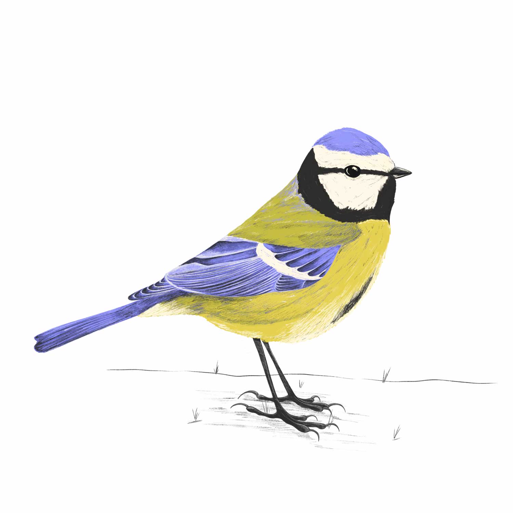

Blue Tit
A very small blue, green and yellow bird commonly found in gardens, parks and woodlands.
 All Year
All Year Gardens, Parks & Forests
Gardens, Parks & Forests Very small (12cm)
Very small (12cm) Bird call
Bird call
Distinguishable from the Great Tit by its blue head, the Blue Tit is smaller and more similar in size to the Coal Tit.